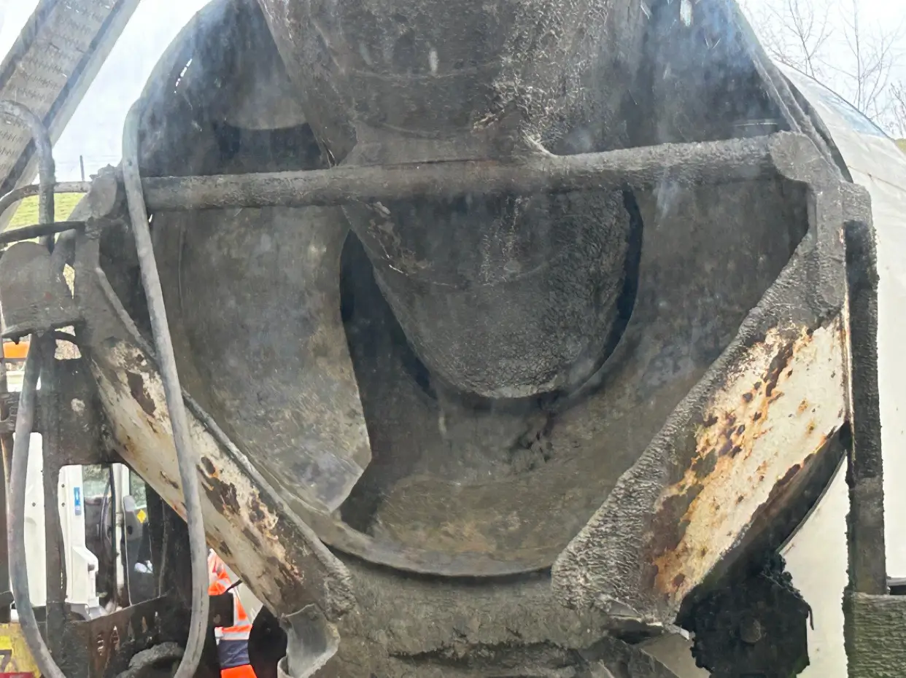
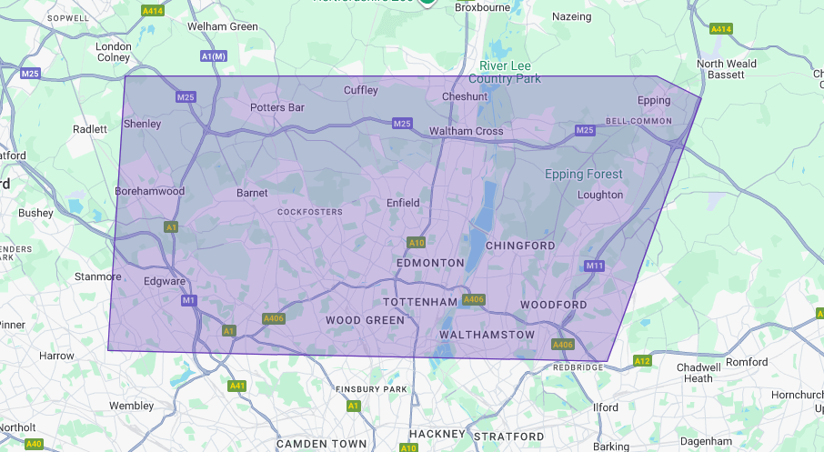

The service we provide for shed bases across Enfield
Concrete Shed Base Installation Service in Enfield
We install shed bases in back gardens all over Enfield and some surrounding areas, our service is laser focused on concrete base work. We don't cater to all we're not a jack of all trades.
A misconception is that a concrete base is as simple as pouring concrete on the ground, but that's not the case. It’s planned around ground conditions, garden access, intended load, drainage, and long-term performance. We specialise in concrete base work, strictly installing concrete bases for local homeowners throughout Enfield.
The process starts before any concrete gets poured in your garden, it begins at the batching plant, where concrete is produced & checked by technicians for consistency and strength, ensuring when we lay each concrete base for our clients the base stays strong and durable. Depending on the setup, concrete gets mixed at the plant in the mixer or directly in the volumetric lorry before delivery. This allows timing, quantities, and delivery to be coordinated accurately for all our Enfield sites.

Concrete being loaded into a volumetric lorry before Enfield site installation.
Every stage of the process is important. From how the concrete is produced and scheduled to how it’s installed in your garden.
Once the concrete has been mixed and prepared in the lorry, delivery is coordinated locally so arrival times align with access, setup, and pour readiness.
When we arrive on site, the area is prepared correctly before any concrete is laid. This includes excavation to the required depth, installing a weed membrane where needed, and creating a compacted sub-base so the concrete has a stable foundation to sit on. Levels are checked before the pour begins to ensure the finished base is flat, even, and suitable for the structure it will support.
Each concrete base project in Enfield is approached with care and structure. The aim we work with is to install a concrete base that drains correctly, remains stable, and performs as intended for decades for all of our clients, whilst avoiding common issues such as movement or cracking caused by poor preparation.
If you’ve been searching for concrete base installers near me & your local to Enfield give us a call or email your enquiry
Even the best type of garden buildings can deteriorate quickly if it’s installed on an uneven or poorly prepared surface. Some common problems caused by inadequate bases include:
Doors sticking or binding over time
Water pooling on the floor or around the structure
Timber frames twisting due to movement
Premature rot and structural wear
A properly installed base eliminates these issues. Correct depth, reinforcement where required, and a properly compacted sub-base ensure the slab remains stable and level long-term.
Who this service is for
Concrete Shed Bases for Residential Gardens in Enfield
Designed for residential homeowners
This is a specialist service for residential homeowners. We strictly focus on installing solid, flush concrete bases in Enfield gardens, we do not provide the shed itself, we install the concrete base it sits on.
This service focuses solely on the installation of concrete bases. The work is centred around correct planning, ground preparation, concrete supply coordination, and installation, making sure your finished base performs properly over time, not just on day one.
Suitable structures
These bases are typically installed for common Enfield residential garden structures where a stable, level foundation is required before the structure is erected.
The base is designed to suit the size, weight, and intended use of the structure it will support.
Garden sheds and storage buildings
Summerhouses and garden rooms
Log cabins and timber structures
Small workshops and hobby spaces
Built around Enfield garden access
Most concrete base installations in Enfield take place in residential gardens rather than open sites. Access is often limited to side passages, shared driveways, or garden-only routes, with neighbouring properties close by. This affects how concrete is delivered, where the equipment needs to be positioned, and how the installation is planned.
Timing, coordination, and preparation all matter, so concrete deliveries are scheduled to suit residential access.
This service is not intended for
This service focuses on the installation of concrete bases rather than the supply or installation of sheds themselves. It is also designed for planned residential garden projects, where access, preparation, and scheduling can be assessed in advance.
If your project involves other concrete work or larger-scale installations, this can be discussed and the right approach can be considered.
While we install many concrete bases for sheds this service also covers:
Summerhouse bases
Log cabin slabs
Garden room foundations
Small workshop bases
Paving-ready concrete platforms
Each concrete base is designed to suit the structure it supports, rather than using generic or a one-size-fits-all approach, all of our work is specifically catered to each Individuals needs.
You can view some of our other service pages by clicking below:
Concrete Base Installation Enfield – Ground Conditions
Having a shed base installed in Enfield isn’t simply a case of measuring up and pouring concrete. Ground conditions across the borough can vary noticeably between streets, and that variation directly affects how a base should be installed for long-term stability.
In many parts of Enfield, clay-heavy soil is common. Clay reacts to changes in moisture, expanding during wetter periods and shrinking in dry spells. Over time, that natural movement can place stress on poorly installed slabs. When the base is installed properly it accounts for this from the outset, ensuring the finished structure remains stable season after season.
Drainage patterns also differ from garden to garden. Slight slopes, neighbouring properties, fencing lines, and existing patios can all influence how water moves through a space. A well-considered base installation positions the slab correctly within that environment, helping prevent standing water and reducing long-term moisture exposure around your building.
This is particularly important for heavier structures such as log cabins or insulated garden rooms, where consistent support is essential.
Every concrete base installation is therefore approached with local awareness and structural intent. We dont just want a neat finish on the day of installation, but a base thats going to perform reliably for years without shifting, cracking, or causing any issues for the structure above it.
Local scheduling & suitability.
Confirm suitability for your Enfield property.

The map above is shown for local reference across and near Enfield. Final suitability will be confiemed directly with you
Concrete Base Installation Service in Enfield For Local Homeowners